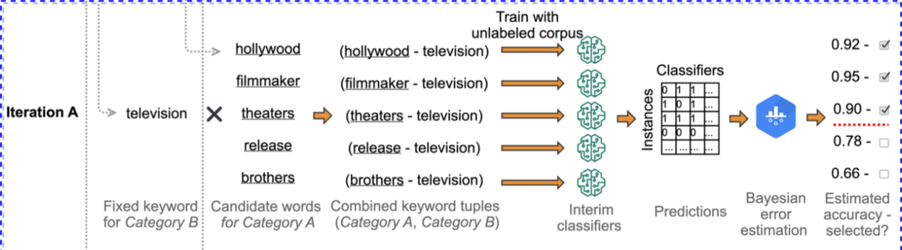
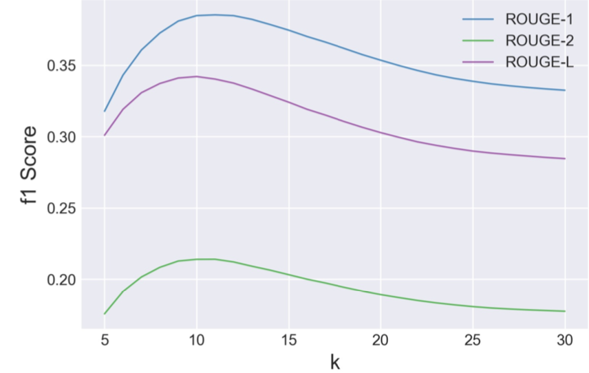
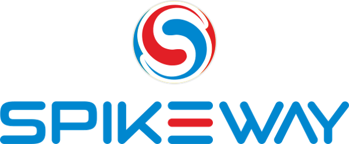
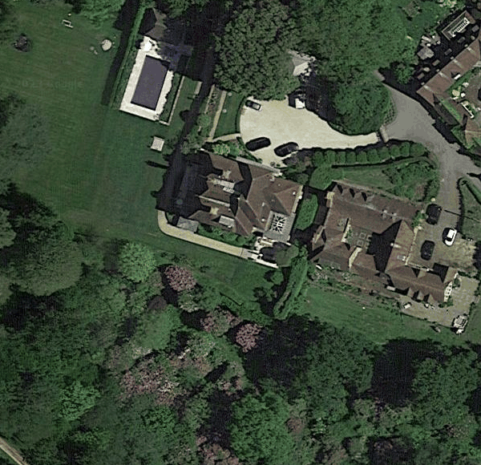
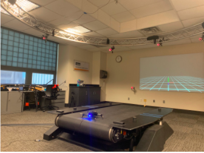
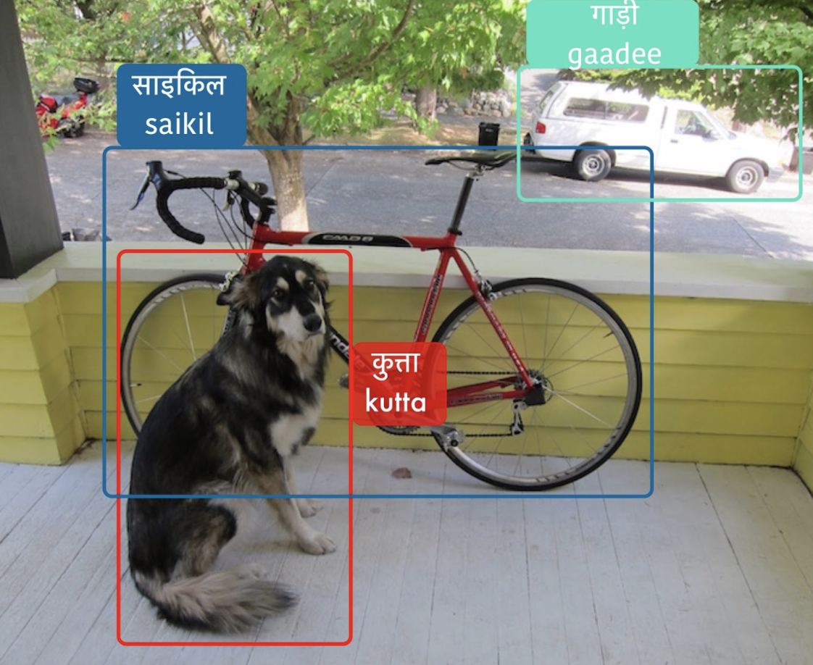
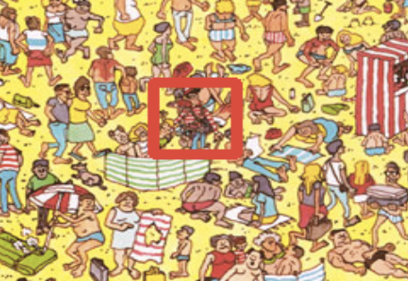

|
Research Interests
My interests broadly lie in the fields of Natural Language Processing, Machine Learning, and Computer Vision. More recently, I have been working at the intersection of Computer Vision and Natural Language Processing for visio-linguistic tasks such as Image Captioning and Visual Question Answering for Geospatial and Remote Sensing domain in a unsupervised/semi-supervised setting.
Previously, my work focused on weakly-supervised text classification and context aware and controlled text generation algorithms for applications in the Dynamic Creative Optimization domain.
|

|
University of California Merced
, Merced, CA, USA
Master's of Science
Electrical Engineering and Computer Science(EECS)
Aug. 2021 - May 2023(
Graduate Teaching Assistant for:
- CSE 005: Intro to Computer Applications, Spring 2022
- CSE 120: Software Engineering, Fall 2021
- CSE 031: Computer Organization, Fall 2021
|
|
|
Jaypee Institute of Information Technology
, Noida, UP, India
Bachelors of Technology
Electronics and Communication Engineering(ECE)
Thesis: Real-time control of Zigbee for Smart Shopping System using RFID
July 2014 - June 2018
|
|

|
Seed Word Selection for Weakly-Supervised Text Classification with Unsupervised Error Estimation
Jin Yiping,
Akshay Bhatia,
Dittaya Wanvarie
NAACL SRW 2021
arXiv / Paper / Code
Weakly-supervised text classification aims to induce text classifiers from only a few user provided seed words. The vast majority of previous work assumes high-quality seed words are given. However, the expert-annotated seed words are sometimes non-trivial to come up with. Furthermore, in the weakly-supervised learning setting, we do not have any labeled document to measure the seed words’ efficacy, making the seed word selection process “a walk in the dark”. In this work, we remove the need for expert-curated seed words by first mining (noisy) candidate seed words associated with the category names. We then train interim models with individual candidate seed words. Lastly, we estimate the interim models’ error rate in an unsupervised manner. The seed words that yield the lowest estimated error rates are added to the final seed word set. A comprehensive evaluation of six binary classification tasks on four popular datasets demonstrates that the proposed method outperforms a baseline using only category name seed words and obtained comparable performance as a counterpart using expert-annotated seed words.
|
|

|
Toward Improving Coherence and Diversity of Slogan Generation
Jin Yiping,
Akshay Bhatia,
Dittaya Wanvarie,
Phu T. V. Le
Natural Language Engineering Journal, Cambridge University Press - 2021
Preprint / Dataset
Previous work in slogan generation focused on utilising slogan skeletons mined from existing slogans. While some generated slogans can be catchy, they are often not coherent with the company’s focus or style across their marketing communications because the skeletons are mined from other companies’ slogans. We propose a sequence-to-sequence (seq2seq) Transformer model to generate slogans from a brief company description. A naïve seq2seq model fine-tuned for slogan generation is prone to introducing false information. We use company name delexicalisation and entity masking to alleviate this problem and improve the generated slogans’ quality and truthfulness. Furthermore, we apply conditional training based on the first words’ part-of-speech tag to generate syntactically diverse slogans. Our best model achieved a ROUGE-1/-2/-L score of 35.58/18.47/33.32. Besides, automatic and human evaluations indicate that our method generates significantly more factual, diverse and catchy slogans than strong long short-term memory and Transformer seq2seq baselines.
|

|
Sentinel: In-House Active Learning Platform
Akshay Bhatia,
Jin Yiping,
Vishakha Kadam,
Tho Nguyen
Work done as part of Research Grant by Enterprise Singapore, 2021
Manuscript
Modern applications require large datasets to train a classifier to achieve respectable results. But in practice, this incurs a significant cost since humans have to manually label data points. Active Learning(AL) is useful for reducing the amount of supervision needed for performing a task, by having the model select which data points should be labeled. We present Sentinel, an active learning platform capable of building text classifiers as well as annotating large amounts of text data. Our platform lets the user interact with the system and annotate and build text classifiers up to their requirements, thus requiring less human effort and time. More importantly, we implement a novel training strategy combining active learning with tri-training that performs better than random, uncertainty(entropy), and expected gradient length(EGL) sampling on 2 benchmark datasets. Through a series of experiments, we evaluate our platform, Sentinel, on various text classification benchmark datasets and a corpus of Real-Time Bidding (RTB) requests essential to the task of Brand Safety at Knorex. Our results demonstrate the effectiveness of our framework and provides for a computationally efficient sampling method.
|

|
Dell Technologies
, San Francisco, California, USA
Data Scientist
July 2023 - Present
|
|
|
Dell Technologies
, Austin, Texas, USA
Data Scientist Intern
May 2022 - August 2022
- Implemented the search and recommendation engine for Dell Knowledge Center Sales tool.
- Developed and deployed a zero-shot learning algorithm for an automated content tagging system.
|
|
|
Computer Vision Lab, UC Merced
, Merced, USA
Research Member
January 2022 - Present
- Working on devising semi-supervised learning algorithms for Image Captioning and Visual Question Answering for Geospatial and Remote Sensing Imagery data.
|
|
|
Knorex
, Pune, India
Research Scientist I - NLP
April 2019 - July 2021
- Worked on training and evaluating text classification and text generation models for Knorex KAIROS's Brand Safety and Contextual targeting offerings. Improved overall CTR on an average advertising campaign by 12%. Work published at NAACL SRW 2021..
- Responsible for the end-to-end development of Sentinel: Intelligence-as-a-Service Platform for Content Moderation at Scale, an Active Learning platform to build text classifiers without any labeled data - a research grant project supported by Enterprise Singapore.
- Enhanced Transformer models with delexicalisation and entity masking for the task of automatically generating high quality advertising slogans for Dynamic creative optimization, surpassing previous benchmark results by 33%. Work published at NLE CUP 2021.
- Supported several production ad-hoc features such as Keyword Extraction and Search Similarity for User-Defined Custom Segments for Contextual Targeting.
|
|
|
CampK12
, Gurugram, India
Machine Learning Developer Intern
June 2018 - December 2018
- Worked on LingoLens, a K12 language learning mobile app with real-time on-device object detection. Trained a custom YOLO model to detect 150 objects with an mAP of 67%.
- Subsequently optimized the on-device detection and classification inference speeds by 19% with only 6% performance degradation compared to SoTA methods such as RetinaNet and SSD.
- Co-designed and co-instructed CampK12's first Machine Learning & AI course.
- Devised embedding and attribute-aware similarity models for the automatic question tagger system for the peer to peer question answering forum for the CampK12's Generation Blockchain 2018 Summit
- Explored the domain of Machine-assisted Assignment Grading and experimented with applying variations of neural language models and other embedding techniques to the task of Automatic Essay Scoring.
|
|

|
Spikeway Technologies
, Noida, India
Machine Learning Intern
May 2017 - July 2017
- Led a 3 member team for the development and deployment of a ML-based Book Genre Classification system to classify books into their genres, based entirely on its title, without knowledge of author and origin. Deployed the trained models with Kubernetes' containers and pods in production.
- Collaborated with the backend team on the prototype of a News Article Authorship Plagiarism Checker with a word embedding vector similarity approach.
- Worked directly with various e-commerce based clients on ways to integrate AI systems such as virtual assistants, query suggestions, recommendation engines etc. as web solutions for B2B businesses
|
|

|
Improving Cross-View Remote Sensing Image Retrieval with Images and Captions
Masters Project
Report
Cross-View Remote Sensing Image Retrieval or cross-view geo-localization is a fundamental research area in remote sensing image analysis. It is used to determine the position of a ground image query by correlating it with a database of geo-tagged satellite images and is often used for several applications such as disaster and damage assessment and monitoring road and terrain network understanding. But a common challenge for this task is the significant variation in view angles and time differences between the ground-level image and the corresponding aerial image. As a result, it is very difficult to capture global semantics and other relations between the two image pairs. Recent research has made remarkable strides in remote-sensing image retrieval benchmarks but conventional methods often overlook other modalities such as textual captions which describe the entities and other information present in ground-level images.
We propose a new approach to enhance the cross-view image retrieval results by utilizing both images and associated textual captions depicting geographic content that describe the contents of the ground-level image. Our framework ex- tracts geographic content and terrain features from the ground-level image and text caption. Finally, we curate a new dataset based on an existing geographic image captioning dataset, GeoRic. We do this by scraping overhead imagery for the corresponding ground-level images in the dataset using Google Static Maps API. We then demonstrate the effectiveness of our multi-modal approach on the newly created dataset by comparing it with existing unimodal and multi-modal deep learning-based image retrieval methods. Experimental results show that our approach outperforms the traditional image retrieval method and performs competitively with an image-text retrieval model in terms of retrieval accuracy. The incorporation of captions improves retrieval performance, especially in cases where the images have complex and varied visual content. In summary, this project proposes an approach to enhance the remote sensing image retrieval results by utilizing both images and captions. The proposed approach can capture the complex relationships between the images and captions and achieves superior performance compared to traditional unimodal image retrieval methods.
|
|

|
Drone Fault Detection Based on ROS Topics
Course Project for EECS 283: Advanced Topics in Intelligent Systems with Azin Shamshirgaran
Report
Explored the domain of external and internal fault detection systems for autonomous UAVs and drones. Main contributions included gathering and labeling of sensory data using a Parrot Bebop 2 drone and experimenting with variations of ordering techniques to enhance CNN models for 1D drone sensory data.
Improved vanilla CNNs using upsampled ordering for sensory data with inclusion of novel features, outperforming classical machine learning and existing heuristics' based algorithms with an AUC-ROC score of 94.3%.
|

|
Road Network Extraction using Satellite Imagery
Submission for MoveHack Global Mobility Hackathon 2018
Github /
Demo video
The project involved training and deploying a road segmentation and extraction system using high-resolution satellite imagery for reliable and low-cost terrain monitoring and infrastructure quality assessment.
Optimized the trained model for real-time applications with final inference speed of only 0.28 seconds on Tesla K80 GPU achieving a mask accuracy of 95% and a dice score of 65% on the validation set.
|
|

|
LingoLens
@CampK12 with Anshul Bhagi
Slides /
API Docs
A multilingual language learning app for K12 students providing translations and transliterations for indoor and outdoor objects in over 20 languages.
We implemented a real-time object detection and on-device scene classification model Trained a custom YOLO model to detect ∼150 objects with an mAP of 67% improving the on-device detection and classification inference speeds by 19% with only 6% performance degradation compared to SoTA methods such as RetinaNet and SSD.
|
|
|
Book Genre Classification
@Spikeway Technologies with Praveen Kumar
Github /
Demo
In this project, I led a 3 member team in the development of an ML-based system to classify books into their genres, based entirely on their title, without prior knowledge or context of author and origin.
I was responsible for the architecture, training, and deployment of the model. We improved the TFIDF and LR baselines by training a LSTM using pre-trained word2vec embeddings.
|
|

|
Computer Vision Projects
Just for Fun
Github
Open-source implementations for various computer vision tasks such as Template matching, Object Tracking, Face Swapper, Live Sketch, etc, using OpenCV.
100+ stars, 90+ forks.
|
|
|
TravelCamp
Submission for IMAD 2016
Github /
Demo
This project involved developing a social blog/profile web app where users can interact with each other. Other features including personal feed, posts, comments, signing, and logging in.
The web app follows RESTful approach for CRUD operations and was deployed using Heroku. Backend frameworks used: NodeJS, ExpressJS, MongoDB, PassportJS
|

|
{kind=link}